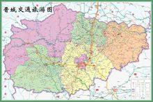

| 首页选项 | 白马风景 | 晋城风光 | 地理位置 | 历史延续 |
历史沿革
建制沿革:

晋城古称建兴、建州、泽州与泽州府晋城老城（清山西省泽州府治图）晋城老城（清山西省泽州府治图）。高都、塔水河、下川、和村、八里坪遗址出土的文物表明，据今两万年前，今晋城市丹河与沁河流域即有人类繁衍生息的足迹。
远古时期，中华人文始祖尧、舜、禹汤，均活动于今晋南一带，而晋城属“京畿之地”，由此产生了女娲补天、愚公移山、尧封丹朱、蚩尤冶铁、舜“耕历山、渔于获泽”，禹凿石门、商汤桑林祈雨等一系列神话。陶唐时期，尧分天下为九州，晋城全境属冀州之域，帝都畿内。
虞舜时期，舜分天下为十二州，此属冀州。《墨子》载:舜耕(沁水)历山，渔于获泽（今阳城）。夏代时期，十二州复合为九州，此属冀州。《战国策》载：夏末汤伐桀，桀由安邑迁都于垂（今城区与郊区）。
商代时期，属冀州畿内地，境内有商盖国（今高平境内）。《吕氏春秋》载：商汤桑林筹雨，获雨遂作桑林之乐。（桑林在今阳城境内）周代时期，属冀州畿内地，境内有原国（今沁水西北有原城）。《穆天子传》载：周穆王休于获泽，以观桑者，乃饮于桑林。
春秋初期，境内为铎狄所杂居，后晋士会灭铎狄，境内各国为晋征服，属晋。
春秋中期，经过高都入晋，晋取泫氏、获泽，赵浣城泫氏等历史事件，境内形成高都、获泽、泫氏、端氏四大城邑，均属晋国封邑
版权所有：宋梦圆
地址：山西省晋城市|邮政编码048400